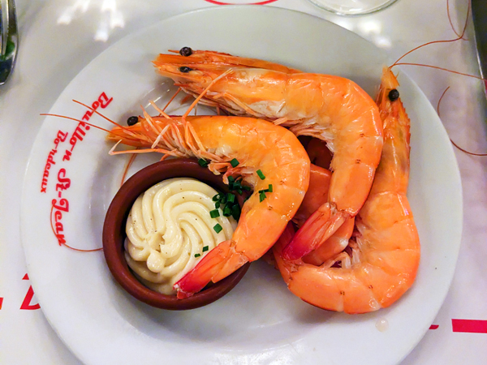
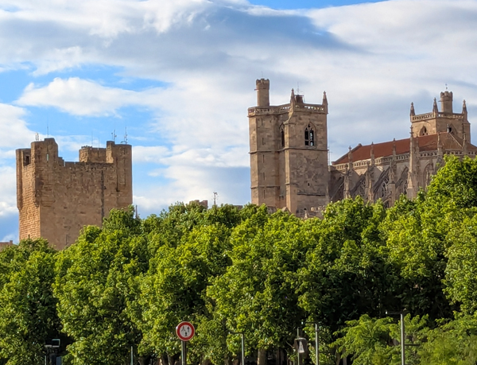
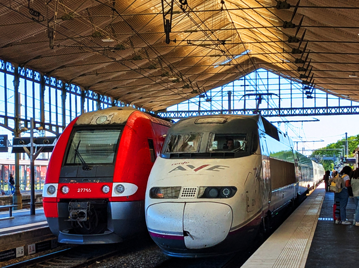
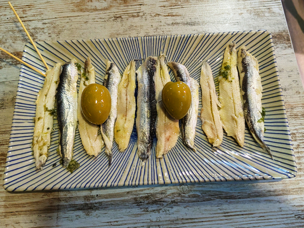
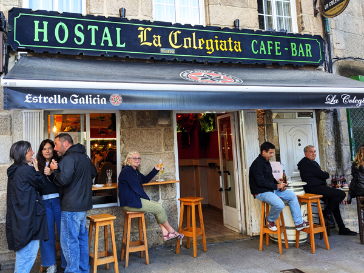
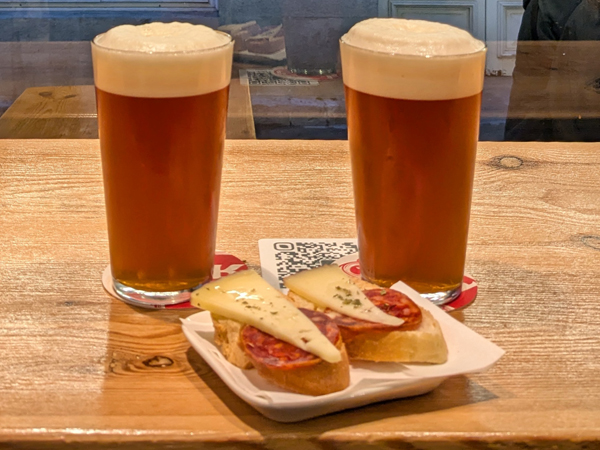
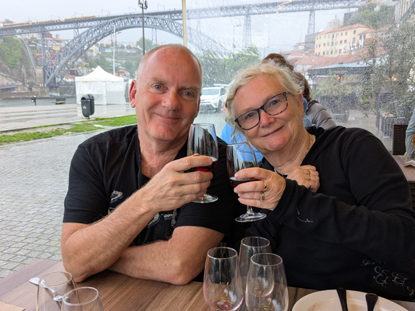
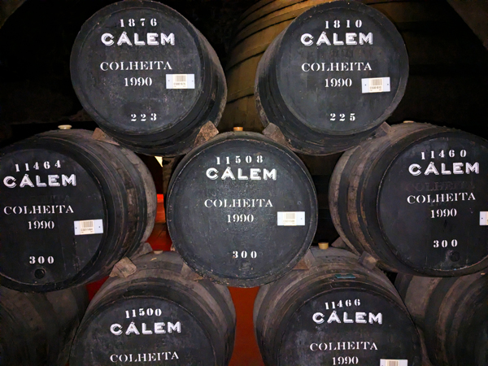
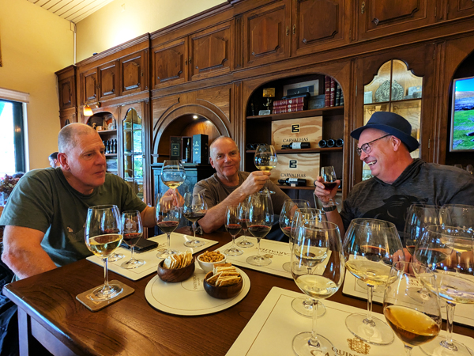
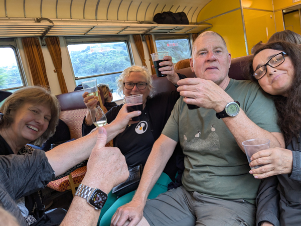

Saturday 2nd May Today was Day 1 of our Interrail trip to Portugal. We are due to meet Hoggy, Sarah, Aleks and Andi in Porto in eight days time and had decided to go by train. Our Interrail tickets give us four days of first class train travel to be used in the next month
We left Kingsclere on the 08:05 bus and got to Basingstoke just in time to catch the 08:36 train to Waterloo. We failed to find the first class carriage but had seats near the front of the train anyway so did not bother. We got into Waterloo on time and walked across London to St Pancras. We were at St Pancras just after 10:00 and went straight to The Barrel Vault for our first beer of the trip.
As we walked past the Eurostar area, it all looked a bit chaotic with queues stretching to the back of the station. We had one drink and went to join the chaos. There were a lot of people around and nothing was very organised but by ignoring the staff, we were able to get ourselves close to the front of the queue of people waiting for the 12:31 to Paris. We got through into the waiting area fairly quickly once the gates opened for our train but were soon told of delays in the tunnel. The UK to France track through the tunnel was closed and one track was being used for trains in both directions. This was what was causing the delays and the confusion outside. We eventually boarded the train just after 13:00 and finally left St Pancras at 13:51 - 80 minutes late.
Once on the train, the journey was quite enjoyable. We were in the Eurostar Plus seats so had a complimentary meal and a few glasses of wine while following the afternoon's football. We arrived at Gard du Nord at about 17:45. We got the RER across Paris to Gare de Lyon. Our next train was due to depart from Gare d'Austerlitz but the two stations are not far apart and there are more bars round Gare de Lyon.

We walked to Le Viaduc, a studenty type place with good beer and reasonably priced food. We both had meals and a couple of beers and then started walking to Austerlitz. We stopped for one more drink on the way at Le Paris Lyon which was a good move as there was nothing at all open in or around the station. We had about 30 minutes to wait around before boarding the 22:13 overnight train to Toulouse Matabiau.

We had 1st class sleeping berths booked on this train. We had only been able to get upper berths in a four birth compartment and were sharing the compartment with a French couple. We got into our beds as soon as we boarded. The beds were very comfortable and we were asleep not long after the train pulled out of the station.
Sunday 3rd May I woke just before 6:00 and we arrived in Toulouse slightly early about 40 minutes later. We walked from the station to the Novotel in the centre and despite being very early, were able to check straight into our room.
The weather forecast for today was not great. After having showers, it was tempting to go to sleep for a couple of hours but the sun was shining and there was plenty of blue sky around so we decided to go straight out and look at some of the sights before the weather deteriorated.
First stop was Marché Victor-Hugo, a large indoor food market behind the hotel. This was quite good to walk around but we did not find anywhere we wanted to stop at for breakfast so we left and walked to a near-by cafe for a couple of chocolatini's instead. We then had a couple of hours walking round the main sights. First was Basilique Saint-Sernin and then Place du Capitole, the main square with the impressive town hall. We passed the Couvent des Jacobins which was completely covered in scaffolding and then carried on out to the river and Pont Neuf.

We started heading back towards the cathedral and stopped on the way for a quick look round Musée des Augustins. We would not have bothered going in here but it is free entry on the first Sunday of the month. Neither of us were that bothered about the exhibits but the building that they were all housed in was nice enough to wander round for 15 minutes or so. We continued along the road and went into a cathedral. We did go in but there was a service taking place so we did not stay long. We walked back via Place du Capitole again and were back at the hotel just after 11:00. This time, I did go to sleep for an hour or so.
Roz went out to buy bread, cheese and pate for lunch. We ate it in the room.
At 3:30 we went down and had our welcome drink in the bar. We had then planned to go out for a couple of beers and then eat at Le Bouillon Capitole, a branch of the same chain that we had been to before in Paris. However, things did not go quite to plan. The first bar that we went to was closed so we went into The Thirsty Monk for one instead. Although this was an Irish Bar, it was very good. They had a good range of beers, they were showing rugby and football on different teles and there was a good crowd of people in there. We had a second drink while watching the football by which time it was their happy hour so we stayed for a third.

We were both getting a bit light-headed by now. We crossed the road and went for one in Delirium Café by which time we had given up on the idea of going to Le Bouillon. Instead, we had a couple of kebabs and returned to The Thirsty Monk. We had another couple of hours in there while watching Villa v Spurs and apparently taking part in their music quiz. We were back in the hotel by 9:15.
Monday 4th May We were up by about 7:30, not feeling too bad due to the early ending of yesterday's session. We checked out of the hotel at about 8:30 and walked back to the station stopping to buy food and drink on the way. We had bought tickets for the 09:24 train to Bordeaux. Even though we had 1st class tickets again, this train was not expensive so today we were not using our Interrail tickets. The train left on time and got into Bordeaux at 11:54 (also on time).
We had a walk of about 10 minutes to get to our second Novotel of the trip. This time, they did not have a room available so we left our luggage in the luggage room and headed out to start our sight-seeing. We walked along the river as far as Pont de Pierre and then went into the old town. It was a very nice area to wander round. We saw a few churches and some of the old gates which were very spectacular. We headed for the indoor market for lunch but it was closed on Mondays so went to a burger/kebab place instead. We were back at the hotel by about 2pm and were able to check in.

At 3:30, we went down for our welcome drinks. By this time the weather had deteriorated and it was raining quite heavily. We had planned to walk into the old town again but decided a tram might be a better idea. After installing the TBM app and working out how to buy tickets we got a tram from just outside the hotel. The tram followed the route we had walked earlier and dropped us at Quinconces, a minute or so away from Le Bar à Vin. This was an excellent place with reasonably priced wine.

After an hour in there we walked to The Frog & Rosbif. This was part of a chain of bars that brew their own beer and have a very good happy hour. Between 5 and 8, all their beers are €5 a pint including a very drinkable 6.2% IPA. After a couple in there, we got a tram back to Bouillon Saint-Jean opposite the station. As with the one in Paris, the food was very good and excellent value compared to a lot of places. We had a couple of bottles of wine with the meal and stopped at a couple more bars before returning to the hotel.
Tuesday 5th May A bit of a later start today as we did not get up until 11ish. We walked back to the market area looking for somewhere to have breakfast. The market was open today but there was no-where that particularly appealed for eating. We walked back to the station area and had paninis in a similar place to the one we had eaten in yesterday before returning to the hotel.
By about 2:00, it had stopped raining and we went out to continue our sight-seeing. We went back into the old town and along to The Bourse and "Le miroir d'eau". We walked from there to the cathedral. We thought about climbing the tower but it was €9 each and I was feeling a bit rough by this time so we did not bother. We got a tram from there to Cité du Vin. We had already decided that we would not pay to get in here as it was too expensive but we went to have a look at the building anyway. It is supposed to resemble a wine carafe. It was not really worth the journey out to it but this completed all the sights we had wanted to see.
We got the tram back a few stops and walked to The Museum of Wine and Trade. This was cheaper to get into than Cité du Vin and included two wines to taste. All quite interesting although they were not as generous with the tasting as in some places we have visited. We left there and started walking back towards the old town. It was raining again by this time so we stopped for a drink in Beer Trotter. Once the rain had stopped, we walked back to Le Bar à Vin for a couple more glasses of wine. We had thought about trying different bars but the happy hour in The Frog & Rosbif was too good to resist so we went back there again.

From there, I got a tram back to the hotel to drop off my camera while Roz walked directly to Bouillon. We both got to the restaurant at about the same time and had excellent meals again. After eating, we walked round to Le Karadoc and had a couple more drinks while watching the Arsenal game.
Wednesday 6th May We did not do a lot all morning as it was raining again and there was nothing left that we wanted to go and see. We checked out of the hotel just before midday and went for a late breakfast at a bakery. We walked down to the station, bought provisions for the next train journey and had a wait of about 90 minutes for the 14:10 train to Narbonne. We boarded the train at 13:50 and it left on time.
The train journey was very comfortable again. We arrived in Narbonne a few minutes late, just after 18:00 having passed through Toulouse and Carcassonne on the way. We came out of the station and had a three minute walk to Will's Hotel where we were booked in for the night. We had chosen Narbonne as we had to change trains here anyway on the way to Madrid and having a night here made the journey a bit more relaxing.
We put our bags in the room and went straight out for a look round the old town centre. This was only about a ten minute walk from where we are staying. The town is dominated by the cathedral and the attached castle type building. All quite pleasant for walking around for half an hour or so.

We returned to the room for showers and then went out for a pizza. We were both totally worn out today so had a much-needed night off alcohol. We were back in the room again before 9.
Thursday 7th May We were up by about 8:30and walked back into the old town. We bought pain au chocolates for breakfast and ate them sat by the canal. We walked back to the hotel, packed up our things and checked out. Back at the station we waited for the 10:36 train to Madrid.

The train was on time again. This was probably the nicest train we have been on as it was one of the Spanish AVE trains which are faster than the French trains we have been travelling on. We did not have seats next to each other for this trip but we were not far apart and the train was very comfortable. At about 11:20, we crossed from France into Spain. We stopped in Girona and Barcelona and then had only two stops between Barcelona and Madrid. Despite bing almost six hours long and not sitting next to each other, it was another very enjoyable journey.
We arrived into Madrid Atocha station on time at 16:15. We had not been expecting good weather on this trip but by the time we arrived in Madrid, the rain was torrential. We walked through the station to get to the closest point to our hotel and waited for it to ease a bit. We walked out of the station and crossed the road to the first bar we saw. It had eased again after we had had a beer so we kept on walking. We stopped for another drink near Anton MArtin station by which time it had totally stopped. We left there and walked the remaining 10 minutes to our hotel - Hostel Perla Asturiana - a few minutes away from Plaza Mayor. The hotel was a bit typically old and Spanish but it is ideally located and will be fine for a night.
We had showers and went straight out for the evening. We had a look round Plaza Mayor but the square was being used for a free concert from some Spanish rapper that we had never heard of which spoilt it a bit. We did not stay long before heading to the area to the South of the square where there are a lot of tapas bars.

We walked down to the end of C. de la Cava Baja, picked a bar at random and then started working our way back towards Plaza Mayor. We visited eight in total (I think) by which time everywhere was starting to close for the night. Got back to the hotel just before midnight
Friday 8th May We checked out of the hotel at 9:15 and walked to Sol Metro station. We got the metro up to Madrid Chamartin. We had planned to have breakfast and buy food for the next train journey but we did not see anywhere when we came out of the metro station and ended up going straight into the waiting area. We bought a couple of croissants and sat down and waited for the 11:17 train to Vigo.
This was the final day of using our Interrail ticket. Today’s train was another AVE. It was a newer version than the one we were on yesterday and seemed to have more space even though it had four seats across. For today’s journey we did have seats together We boarded the train about 30 minutes before departure and once again, left on time. Apart from the lack of food and drink, it was another enjoyable journey. We arrived in Vigo just before 15:30.
It was a 25 minute walk from the station to the apartment that we had booked. We got the keys from the key safe easily enough and eventually worked out which was our apartment. The apartment is very nice with a small balcony with sea view. It also has a washing machine which we need. We put on washing and then walked back to the Spar to get something to eat and wine/nibbles for later.
We had a late lunch back in the apartment then had an hour or so of not doing much before we started drinking again. Our balcony was just about big enough for a table and two chairs and the weather was better than it had been all day so we were able to sit outside with a bottle of wine and some of the food we had bought earlier.

As it started cooling down, we headed into the old town which is packed with excellent little tapas bars. We were heading for A birreria but found a small square in front of the cathedral with a few bars round it. We had a few drinks in a couple of them and then went to find A birreria. This was another excellent craft beer bar. We had a couple in there before returning to another of the bars in the square. We stopped for one on the way back and had a final drink in the bar over the road from the apartment. A very good night out with excellent bars, good wine and beer and plenty of tapas.
Saturday 9th May We had been late getting to bed last night so did not get up until 11ish. We had chosen to stay in Vigo so that we could have a day trip to Santiago de Compostela. However, we have been quite busy the last few days, the weather is not great for sight-seeing and our apartment is very nice so we had decided to have a lazy day of not doing a lot instead.
We had breakfast in the apartment and then went for a walk round the old town again. It started raining as we went out so we did not go too far. We wandered round the old town again and established where we had been last night. We went for a look around the port and the area where there a lot of sea-food restaurants. All nice enough but the bars of the old town are probably the highlight of Vigo.
We spent most of the rest of the afternoon in the apartment apart from a trip out to Burger King for lunch.

We had planned to have a quiet night tonight before meeting everyone tomorrow, but the bars were so good last night that it was just about impossible not to go out again. We ended up having a very similar session. It was too cold to sit on the balcony so we had our pre-going out bottle of wine sat in the apartment. We walked back into the old town and went to two bars that we did not go to yesterday before returning to A birreria. We also returned to Garatuxa by the cathedral and had a few drinks there before starting to head home. We went to another couple of new ones on the way back. Another very good night out.
Sunday 10th May We left the apartment at 11:00 and walked back to the bus station which is adjacent to the train station we arrived at two days ago. We were booked onto a Flixbus to Porto. The bus came in at midday and left on time at 12:30. It was a bit cramped compared to the 1st Class trains we have become used but it was only for two and a half hours and the scenery meant it was quite an enjoyable journey.
We arrived at the Campanhã bus terminal at 13:45 local time and made our way to the metro station. We got the metro to Trindade and had a walk of about three minutes to get to our apartment. We were let into the apartment by the cleaner and then waited for someone to come and check us in, give us the keys etc. This was all sorted out by about 3, the same time that Aleks and Andi landed at the airport. We waited for them to get here and check in and all headed out at about 5pm.
We walked through the town to the river and crossed over Ponte Luís I. The weather was not great again so not ideal for photos but we managed to avoid the worst of the rain. We got to the other side and walked down the hill to the area in front of the port houses. We thought about doing the Sandeman tour but decided €23 was too expensive so instead went and sat outside Theophilu's Bar where you could taste five glasses of port for €15.

We sat there for an hour or so before going back on the lower section of the bridge and climbing the steps to get up to the town again. Hoggy told us that him and Sarah had arrived so we just had one more glass of port on the way and headed to Season Bar where we had arranged to meet them. This was closed so we walked down to Cervejaria Nortada instead. They arrived about five minutes after we had got there. We stayed in there to eat and had a few more beers before it closed at midnight.
We were trying to find another bar but everywhere was closed. We asked a couple of locals if anything was still open and they led us to an area that was still very lively with plenty of open bars. We went into the same one as them and spent an hour or so there before walking back to the apartments.
Monday 11th May We got up at 11:00 and went next door to Hoggy and Sarah's apartment for breakfast. We all went out for the day at 12:15.
First stop was Mercado do Bolhão. I'm not sure why we hadn't visited this place on our last stay in Porto as it is just round the corner from where we were staying. We only went in for a look around but everyone else there seemed to be stood around drinking so we had our first glasses of wine of the day. We then headed back over to the other side of the river, stopping at São Bento to buy train tickets for tomorrow on the way.
Todays sight-seeing was mainly going to consist of a visit to the Caves Cálem - the Cálem port cellars. We got there at about 2:15 and booked ourselves on the next tour in English at 3pm. We got our tickets and went to Quinta do Noval wine shop for a drink while we waited.

The tour was pretty good. We spent 30 minutes or so in the cellars looking at all the barrels and then went up to the tasting room. We had booked the tour which included three glasses of port to taste and had a few extras as the couple next to us left most of theirs. We went from there back to Theophilu's Bar for another tasting selection.
We went from there back over the bridge. Instead of going up the steps, we walked up through the Ribeira area and found a restaurant for something to eat. After eating, people were starting to flag a bit. Aleks and Sarah went straight home but the rest of us went to Casta D’ouro, the bar we had tried to get into at midnight yesterday. Roz went home from there. After one drink, me, Hoggy, and Andi walked to Season Bar. This was closed again so we returned to Casta D’ouro for another drink before having a relatively early night.
Tuesday 12th May Today's excursion was the scenic railway journey up the Douro Valley. We had bought tickets yesterday for the 9:25 train to Pinhão. We all met up at São Bento station having stopped to buy food and drink for the journey on the way. The train as a lot fuller than we had expected but we managed to get one group of four seats on the right of the train which has the best views.
The journey was all quite enjoyable. We did not see much of the river for the first hour but after that, the views were spectacular for the rest of the journey. We arrived in Pinhão at about midday. Roz and Hoggy had done most of the organising for this trip and the first activity was a 50 minute boat trip. We walked down to the pier and waited around until 1pm when the trip was booked for. We were taken up the river for about 25 minutes before turning round and coming back again. All nice enough although I am still not convinced that we wouldn't have had just as good views of everything from the banks!
We had been quite lucky with the weather for most of the boat trip but in the second half of it, the skies were starting to darken again and by the time we were back at the pier it was raining. We walked back up to the centre of Pinhão where Hoggy had booked a table at the restaurant in Hotel Douro. This was an excellent meal accompanied by a few litres of wine. It would have been easy to stay in there for the rest of the afternoon but as the rain had stopped, we decided to go to another one of the wine houses.

We walked over the river to the Quinta das Carvalhas wine house and spent an hour or so in there trying a range of their wines. This was probably the most up-market place we had been in and things were starting to go a bit down-hill by now. We left there at about 5:30. Roz, Sarah and Hoggy went on ahead to buy wine for the journey back and we all met up at the station again to get the 18:11 train back to Porto.

The journey back was very enjoyable again. We boarded the train with provisions consisting of a bottle of white wine and five litres of red. Not the ideal split but it seemed to do the job. We arrived back at São Bento at about 8:45 and walked up to Armazém da Cerveja, the craft beer place that was our local when we stayed in Porto in 2019. Andi and Hoggy who had consumed more of the red wine than me, were looking a bit the worse for wear by now but we managed to get through three rounds before heading back to the apartments.
Wednesday 13th May Woke up feeling quite rough which was not really surprising given the amount of alcohol consumed in the last couple of weeks. Roz and I went over to the supermarket to buy food for later and then returned to the apartment to pack and have showers.... by which time I had just about recovered. We all met up in Hoggy and Sarah's apartment for breakfast.
At about 11:45, we said goodbye to everyone and walked over to Trindade metro station. Hoggy and Sarah are staying another night and Aleks and Andi fly home a couple of hours later than us. We got the metro out to the airport, went through security and immigration without too many delays and had a couple of hours to kill before our flight back to Stansted.